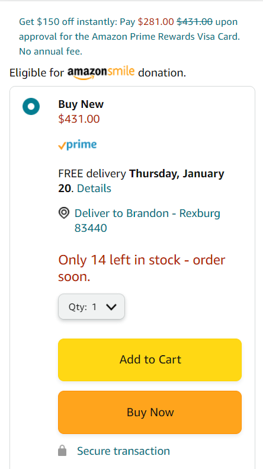

Visual Hierarchy
Amazon
amazon.com Visual hierarchy is the use of arranging elements to show their order of importance. Amazon uses this idea in order to push the users to the endgame, the purchase. They make the "Add to Cart" and "Buy Now" buttons colorful and big, helping the user get straight to the purchase.